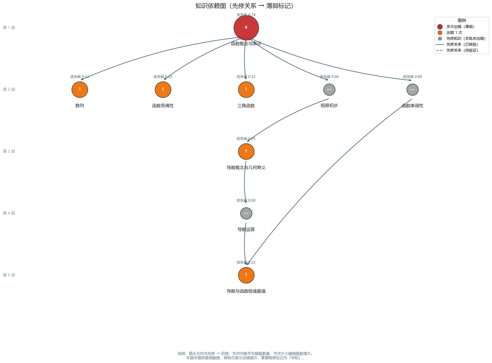
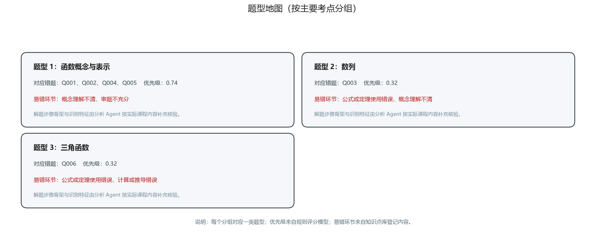

智能错题分析报告
一、报告基本信息
| 项目 | 内容 |
|---|---|
| 学科 | 数学 |
| 题目来源 | sample_questions.md |
| 题目总数 | 6 |
| 含学生作答数据 | 5 题 |
| 无学生作答数据 | 1 题 |
| 含公式题目 | 6 题 |
| 知识点匹配 | 成功 6 题 / 未匹配 0 题 |
二、错题整体概览
识别问题提示（需人工核验）：
- Q005：学生标记为「（无）」，按未提供处理
- 有学生答案/解题过程：5 题 —— 可进行具体错因分析。
- 无学生作答数据：1 题 —— 仅能分析一般性易错点，不判断该学生的具体错误。
三、主要薄弱知识点
| 排名 | 知识点 | 错题数 | 优先级 | 关联错题 | 掌握程度 |
|---|---|---|---|---|---|
| 1 | 函数概念与表示 | 4 | 0.74 | Q001、Q002、Q004、Q005 | 未知 |
| 2 | 函数奇偶性 | 1 | 0.32 | Q002 | 未知 |
| 3 | 数列 | 1 | 0.32 | Q003 | 未知 |
| 4 | 三角函数 | 1 | 0.32 | Q006 | 未知 |
| 5 | 导数概念与几何意义 | 1 | 0.25 | Q005 | 未知 |
| 6 | 导数与函数极值最值 | 1 | 0.22 | Q001 | 未知 |
| 知识点 | 错题频率 | 近期重复 | 错因严重度 | 先修影响 | 复测差距 |
|---|---|---|---|---|---|
| 函数概念与表示 | 0.67（observed） | 1.00（observed） | 0.50（missing） | 1.00（observed） | 0.50（missing） |
| 函数奇偶性 | 0.17（observed） | 0.00（observed） | 0.50（missing） | 0.50（observed） | 0.50（missing） |
| 数列 | 0.17（observed） | 0.00（observed） | 0.50（missing） | 0.50（observed） | 0.50（missing） |
| 三角函数 | 0.17（observed） | 0.00（observed） | 0.50（missing） | 0.50（observed） | 0.50（missing） |
| 导数概念与几何意义 | 0.17（observed） | 0.00（observed） | 0.50（missing） | 0.17（observed） | 0.50（missing） |
| 导数与函数极值最值 | 0.17（observed） | 0.00（observed） | 0.50（missing） | 0.00（observed） | 0.50（missing） |
指标来源说明：observed = 实际记录值；missing = 数据缺失，按保守值估算。
四、错题明细表
| 题号 | 知识点 | 题干（摘要） | 学生答案 | 错因（多选） |
|---|---|---|---|---|
| Q001 | 函数概念与表示、导数与函数极值最值 | 已知函数 $f(x) = x^3 - 3x$，求函数的极值。 | 极大值为 2，极小值为 -2。 | 未提供 |
| Q002 | 函数概念与表示、函数奇偶性 | 判断函数 $f(x) = x^2 + 1$ 的奇偶性。 | $f(-x) = -f(x)$，所以是奇函数。 | 未提供 |
| Q003 | 数列 | 已知等差数列 $\{a_n\}$ 中，$a_1 = 2$，$a_3 = 8$，求通项公式 $a_n$。 | $a_n = 3n + 2$。 | 未提供 |
| Q004 | 函数概念与表示 | 函数 $f(x) = \ln(x^2 - 3x + 2)$ 的定义域是什么？ | $x < 1$ 或 $x > 2$。 | 未提供 |
| Q005 | 函数概念与表示、导数概念与几何意义 | 利用导数求函数 $f(x) = x^3 - 3x$ 在区间 $[-2, 2]$ 上的最大值与最小值。 | 未提供 | 未提供 |
| Q006 | 三角函数 | 求 $\sin 30^\circ + \cos 60^\circ$ 的值。 | $\frac{\sqrt{3}}{2}$。 | 未提供 |
五、错因分析及证据
Q001
- 可观察到的错误：无（未提供学生作答数据，或作答正确）
- 推测原因：暂无法判断
- 错因标注（多选）：未提供（v3.1.0 起一道题可同时标注多个错因，任意组合）
- 判断依据：证据不足
- 置信度：低 | 需用户确认：是
Q002
- 可观察到的错误：无（未提供学生作答数据，或作答正确）
- 推测原因：暂无法判断
- 错因标注（多选）：未提供（v3.1.0 起一道题可同时标注多个错因，任意组合）
- 判断依据：证据不足
- 置信度：低 | 需用户确认：是
Q003
- 可观察到的错误：无（未提供学生作答数据，或作答正确）
- 推测原因：暂无法判断
- 错因标注（多选）：未提供（v3.1.0 起一道题可同时标注多个错因，任意组合）
- 判断依据：证据不足
- 置信度：低 | 需用户确认：是
Q004
- 可观察到的错误：无（未提供学生作答数据，或作答正确）
- 推测原因：暂无法判断
- 错因标注（多选）：未提供（v3.1.0 起一道题可同时标注多个错因，任意组合）
- 判断依据：证据不足
- 置信度：低 | 需用户确认：是
Q005
- 可观察到的错误：无（未提供学生作答数据，或作答正确）
- 推测原因：暂无法判断
- 错因标注（多选）：未提供（v3.1.0 起一道题可同时标注多个错因，任意组合）
- 判断依据：证据不足
- 置信度：低 | 需用户确认：是
⚠️ 未提供学生答案/解题过程，本模块不判断该学生的具体错误；以下内容仅为该题的一般性易错点，不是已发生的错误。
Q006
- 可观察到的错误：无（未提供学生作答数据，或作答正确）
- 推测原因：暂无法判断
- 错因标注（多选）：未提供（v3.1.0 起一道题可同时标注多个错因，任意组合）
- 判断依据：证据不足
- 置信度：低 | 需用户确认：是
六、知识依赖图

- 箭头方向：先修知识 → 后续知识；节点内数字为错题数量。
- 颜色：红色 = 多次出错，橙色 = 出错 1 次，灰色 = 先修知识（本批未涉及）。
- 未提供复测数据，掌握程度为「未知」，颜色仅表示出错频次。
七、题型地图

- 每个分组对应一类题型（按主要考点聚类）；优先级来自规则评分模型。
八、7 天个性化复习计划
每日可用 60 分钟 × 安全系数 0.9 = 每日任务上限 54 分钟。复测间隔：每 3 天（保守安排）。
第 1 天：基础薄弱点突破
- 突破知识点：函数概念与表示
- 完成理论回顾与错题重做
| 任务 | 类型 | 用时 | 完成标准 |
|---|---|---|---|
| 理论回顾：函数概念与表示 | theory | 15 分钟 | 能不看资料写出该知识点的定义、公式，并说出至少 2 个易错点。 |
| 练习巩固：函数概念与表示 | practice | 30 分钟 | 独立完成错题重做且步骤完整；变式题错误能定位到具体步骤。 |
当日合计 45 / 54 分钟
第 2 天：巩固提升与变式练习
- 突破知识点：导数与函数极值最值
- 完成理论回顾与错题重做
| 任务 | 类型 | 用时 | 完成标准 |
|---|---|---|---|
| 理论回顾：导数与函数极值最值 | theory | 15 分钟 | 能不看资料写出该知识点的定义、公式，并说出至少 2 个易错点。 |
| 练习巩固：导数与函数极值最值 | practice | 30 分钟 | 独立完成错题重做且步骤完整；变式题错误能定位到具体步骤。 |
当日合计 45 / 54 分钟
第 3 天：巩固提升与变式练习
- 突破知识点：函数奇偶性
- 完成理论回顾与错题重做
| 任务 | 类型 | 用时 | 完成标准 |
|---|---|---|---|
| 理论回顾：函数奇偶性 | theory | 15 分钟 | 能不看资料写出该知识点的定义、公式，并说出至少 2 个易错点。 |
| 练习巩固：函数奇偶性 | practice | 30 分钟 | 独立完成错题重做且步骤完整；变式题错误能定位到具体步骤。 |
当日合计 45 / 54 分钟
第 4 天：复测检验
- 复测前期内容（函数概念与表示、导数与函数极值最值）
- 标记真正掌握与仍需巩固的知识点
| 任务 | 类型 | 用时 | 完成标准 |
|---|---|---|---|
| 复测：函数概念与表示 | retest | 20 分钟 | 错题重做正确且能说出当时错误的原因；未掌握的回到该知识点的先修内容。 |
| 复测：导数与函数极值最值 | retest | 20 分钟 | 错题重做正确且能说出当时错误的原因；未掌握的回到该知识点的先修内容。 |
当日合计 40 / 54 分钟
第 5 天：巩固提升与变式练习
- 突破知识点：数列
- 完成理论回顾与错题重做
| 任务 | 类型 | 用时 | 完成标准 |
|---|---|---|---|
| 理论回顾：数列 | theory | 15 分钟 | 能不看资料写出该知识点的定义、公式，并说出至少 2 个易错点。 |
| 练习巩固：数列 | practice | 30 分钟 | 独立完成错题重做且步骤完整；变式题错误能定位到具体步骤。 |
当日合计 45 / 54 分钟
第 6 天：巩固提升与变式练习
- 突破知识点：导数概念与几何意义
- 完成理论回顾与错题重做
| 任务 | 类型 | 用时 | 完成标准 |
|---|---|---|---|
| 理论回顾：导数概念与几何意义 | theory | 15 分钟 | 能不看资料写出该知识点的定义、公式，并说出至少 2 个易错点。 |
| 练习巩固：导数概念与几何意义 | practice | 30 分钟 | 独立完成错题重做且步骤完整；变式题错误能定位到具体步骤。 |
当日合计 45 / 54 分钟
第 7 天：总复盘与查漏补缺
- 复盘全部薄弱知识点（函数奇偶性、数列）
- 整理仍未解决的问题清单
| 任务 | 类型 | 用时 | 完成标准 |
|---|---|---|---|
| 复测：函数奇偶性 | retest | 20 分钟 | 错题重做正确且能说出当时错误的原因；未掌握的回到该知识点的先修内容。 |
| 复测：数列 | retest | 20 分钟 | 错题重做正确且能说出当时错误的原因；未掌握的回到该知识点的先修内容。 |
当日合计 40 / 54 分钟
未能排入计划的任务
| 任务 | 原计划用时 | 原因 |
|---|---|---|
| 理论回顾：三角函数 | 15 分钟 | 每日时间预算不足，未能排入计划 |
| 练习巩固：三角函数 | 30 分钟 | 每日时间预算不足，未能排入计划 |
- 时间预算不足：2 个任务未能排入 7 天计划。建议增加每日学习时间、延长复习周期，或减少练习量。
- 以下知识点本次计划未覆盖：三角函数（时间预算限制）。
九、复测记录
当前未提供复测/测评数据，记录表待用户完成复测任务后补充。掌握良好 → 延长间隔；部分掌握 → 保持练习；多次出错 → 回到先修；缺少反馈 → 保守安排。
十、后续学习建议
- 先修优先：优先复习先修影响大的基础薄弱点，再进入综合题与变式题。
- 关注错因而非题量：每道错题定位到具体错误步骤。
- 补测掌握程度：完成首轮复测后更新记录，调整优先级与间隔。
- 扩展知识库：未匹配知识点请在知识库中补充。
- 周期回顾：每完成一个周期重新运行分析，对比优先级变化。
十一、数据来源与不确定性说明
归一化方式：各指标均已归一到 [0,1]：频率=错题数/总题数；重复=min(1,(n-1)/2)；严重度=错因严重度映射值（多选错因取最高，再按题平均）；先修影响=被依赖数/最大被依赖数（含前置缺口加成）；复测差距缺失时取保守值。
- 未提供复测数据 → 掌握程度全部标记为「未知」，retest_gap 为保守估算值。
- 未提供错因标注的题目 → error_severity 标记 missing，按保守值估算。
- 模型置信度不等于真实准确率；所有「推测」内容未经确认前不得作为结论。
- 未提供学生作答数据的题目，分析仅为一般性易错点，不是该学生已发生的错误。